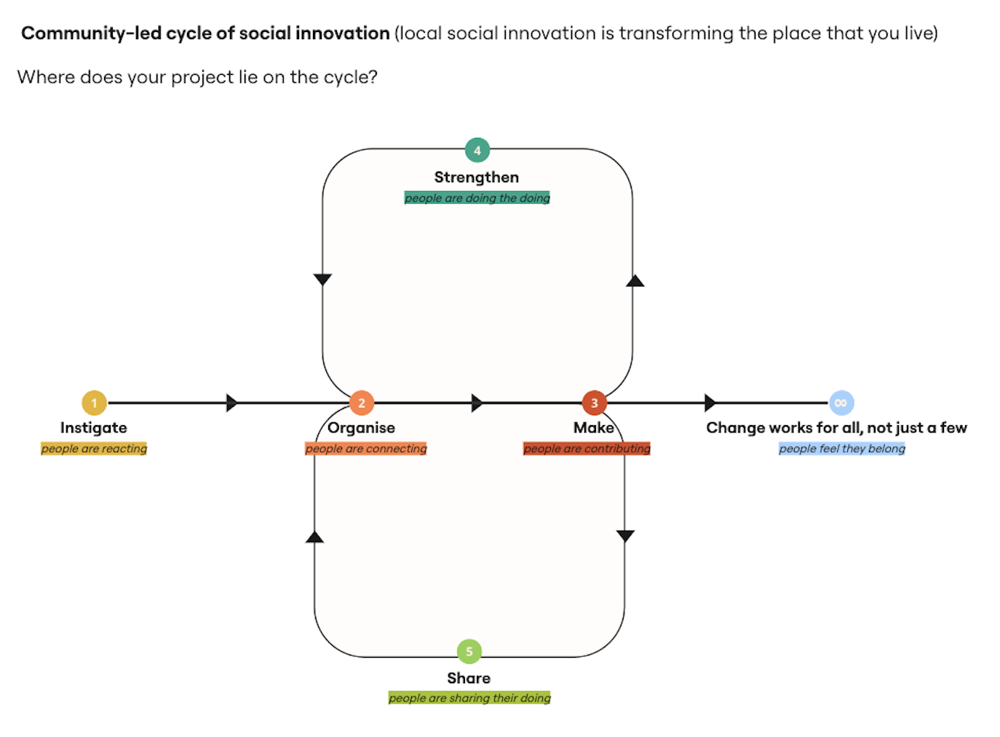
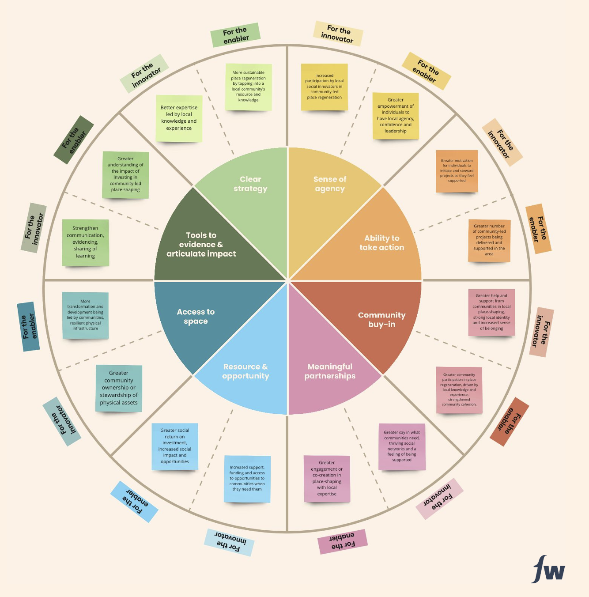

The Challenge
How do you build a learning culture across a national programme without imposing it from the top down?
Footwork Trust's People and Place programme distributes funding to community innovators doing the difficult, pertinent work of neighbourhood transformation across the UK. The challenge was not just grant-making: it was how to learn from that work in a way that could influence future funding decisions, shape policy, and genuinely strengthen the capacity of the innovators themselves.
The brief was to design a Learning Framework for the programme. A systematic approach to capturing, synthesising and communicating insight from 10 community innovation projects every year, in a way that embedded reflective practice into the programme rather than extracting data from it. The framework needed to work for multiple audiences simultaneously such as community innovators, funders, policymakers, architects and built environment professionals.
The core question animating the design challenge: how can we translate the stories we see on the ground into evidence that moves decisions at a systems level?
"How can we translate the stories we see on the ground into evidence?"
Central design question for the Learning FrameworkMy Approach
Embedded, iterative, and co-designed with the innovators themselves
As an embedded researcher at Footwork Trust (present twice a week for one year and nine months) I had sustained access to the texture of community innovation in a way that external consultants rarely achieve. This embeddedness was the methodological foundation of the framework: it allowed the learning approach to be built from situated knowledge rather than imposed from outside.
I co-designed the Learning Framework iteratively in collaboration with my colleagues. It was in dialogue with stakeholders across the programme including community innovators, funders, architects, researchers and policymakers. Each iteration was tested in practice and refined based on feedback. The approach was explicitly participatory: innovators were not subjects of the learning process but active contributors to it.
Central to the framework was the novel Learning Day methodology — structured visits to each project combining formal research interviews, walking tours to understand local context and physical environment, conversations with community members, and co-produced reflection on what the project was learning. These were not extractive site visits. They were designed as generative research and engagement events in their own right.
Framework Component 1
The Place-Shaping Cycle — where does your project sit?
One of the first design synthesis and insight was the creation of a shared language for community innovation that could help innovators locate their work on a common journey. This was without flattening the enormous diversity of contexts, approaches and ambitions across 20 very different projects.
The Place-Shaping Cycle frames community innovation as a non-linear journey through five stages, anchored in the question: where does a project lie on the cycle? It became a core tool in Learning Day conversations, prompting internal reflection on the innovators' progress, identifying what they needed next, and understand how their work related to others in the programme.

The Place-Shaping Cycle — a framework for understanding where community innovation projects sit on their journey
Instigate
People are reacting
The initial understanding that something is inherently wrong with how places are made. The desire to have a say in how the place they call home is shaped.
Organise
People are connecting
Defining the identified problem, raising awareness, understanding community interest, mobilising people with the conviction to enable change.
Make
People are contributing
Increased community engagement and co-design to understand what people want, creating solutions in the form of social innovation.
Strengthen
People are doing the doing
Exploring project sustainability, governance, best practice and strategy. Understanding the potential to scale up.
Share
People are sharing the doing
Communicating impact to audiences, scaling a project. Not all projects will want to engage with this in the same way.
Change works for all
People feel they belong
Footwork's overarching goal, a neighbourhood where everyone has a stake.
Framework Component 2
Ingredients for effective community innovation
Alongside the Place-Shaping Cycle, the framework needed to capture what makes community innovators effective — not as a prescriptive checklist, but as a starting point for understanding the capabilities and conditions that enable place-shaping work to succeed.
Running the People and Place programme across two years, we identified recurring themes as ingredients that effective local social innovators either possess or must develop. These were organised into two rings: an inner ring of capabilities (what innovators bring) and an outer ring of outcomes (what success looks like for innovators and for the system that supports them).

The Ingredients Framework — translating stories from the ground into transferable evidence about what makes community innovation effective
Clear Strategy
A coherent vision for change that is grounded in local knowledge and can be communicated to others.
Sense of Agency
The belief and capacity to act (individually and collectively) to shape the place they call home.
Ability to Take Action
Skills, confidence and relationships that translate vision into tangible neighbourhood change.
Community Buy-in
Genuine participation from residents. Not consultation, but co-ownership of the work and its direction.
Meaningful Partnerships
Relationships with local authorities, funders and other organisations that are reciprocal and trust-based.
Resource & Opportunity
Access to funding, space, time and networks needed to sustain and grow community-led work.
Access to Space
Physical places where communities have stewardship and transformation of them to meet needs.
Tools to Evidence Impact
Methods and frameworks for capturing and communicating the value of community innovation to funders and policymakers.
What I Did
Research, design, facilitation and translation at every stage
The Learning Framework was a living system designed to run across the full arc of the programme. This involved four interlocking strands of work:
Learning Day design and facilitation. We designed the Learning Day methodology from scratch. A bespoke visit format combining structured interviews, walking tours, community conversations and collaborative reflection. I then facilitated Learning Days across 20 projects in locations from Exeter to Sheffield, Cardiff to Coalville, adapting the format carefully to each local context, stakeholder need and accessibility requirement.
Mixed methods research across 100+ participants. Conducting research with community innovators, residents, councillors, policymakers and funders. Selecting and combining methods based on what each context required. Qualitative interviews, observation, documentary analysis and surveys were deployed across the programme, with continuous synthesis of emerging insight.
Stakeholder engagement and relationship management. Managing multiple senior stakeholder relationships simultaneously by maintaining trust and alignment across a complex programme landscape while ensuring the learning process served the innovators, not just the funder.
Translating insight into outputs. Producing briefings, visual summaries, blog posts, and a collaborative documentary film. Presenting findings to senior decision-makers and funders in formats that connected ground-level learning to strategic programme decisions.
Learning Day visit — walking tour and community interview
People and Place gathering — community innovators sharing learning
In Practice
Generous gatherings — learning as a communal act
The learning framework was brought to life most vividly in the programme's gathering events — moments where community innovators from across the UK came together to share, reflect and inspire each other. In late 2023, the first 'People and Place' programme cohort was celebrated with an event that championed the work innovators were doing and also debuted a documentary film collaboratively made from the Learning day footage, edited by Emil Torday.
More such events were held over the years to bring like-minded individuals together. They were structured as generous, reciprocal gatherings sharing food, live music, informal conversation and panel discussions facilitated by community members themselves. The format was itself a demonstration of the learning principles embedded in the framework: that knowledge lives in relationships, and that the most valuable learning happens between peers.
"Welcoming, kind and genuinely inspirational evening last night celebrating Footwork People & Place programme supporting community projects and social innovation."
Event attendee, People and Place 2023 gatheringPeople & Place: Our Story So Far, 2023
People and Place: Our Story So Far — celebrating one year of community innovation
Outcomes & Impact
A framework that changed how the programme understood itself
The Learning Framework was adopted as a core component of Footwork Trust's programme design. It was helpful in informing how the 2024 and 2025 cohorts of People and Place were structured, what questions were asked of innovators, and how the programme communicated its impact to funders and policymakers.
The frameworks and tools developed like the Place-Shaping Cycle, the Ingredients Framework, the Learning Day methodology were applied across 20 projects and contributed directly to Footwork Trust's strategic evidence base for community-led neighbourhood change. My doctoral research conducted in parallel produced findings subsequently adopted by Footwork Trust as frameworks and tools for their ongoing programme delivery. Therefore it was mutually beneficial towards my PhD thesis too.
Strategic impact
A learning system that translated 20 community innovation stories into a shared evidence base. Thereby informing a national grant programme, strengthening individual innovators, and making the case to funders that community-led place-shaping really works.
What I learned
This project taught me that learning design is service design. The Learning Framework was not a research tool imposed on the programme. It was a service that needed to work for multiple, very different users: community innovators who needed it to feel generative rather than extractive, funders who needed it to produce credible evidence, and policymakers who needed it to connect to the decisions they were making.
Holding all of those needs simultaneously, across two years and 20 diverse projects, required continuous iteration and the same agile, feedback-led approach I would use in any service design project. The difference was that the "service" was knowledge itself, and the "users" were also the people generating it.
The embedded research relationship with Footwork Trust also demonstrated something I now believe deeply: that the most valuable design work happens over time, not in sprints. The trust built across a year and nine months produced insights and opportunities that were incredibly rich.